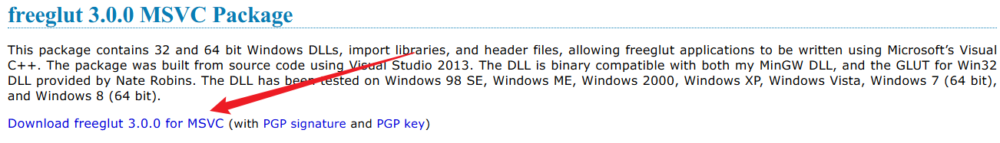
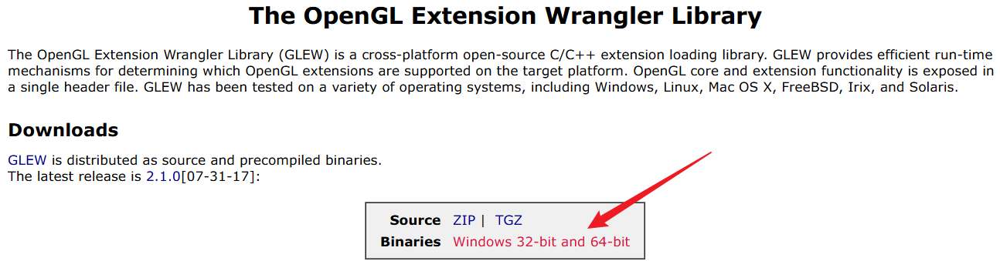
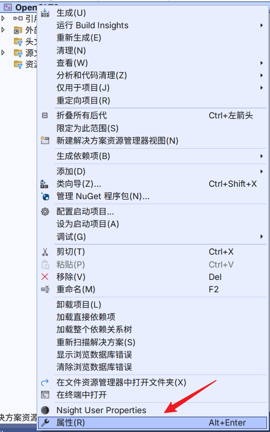
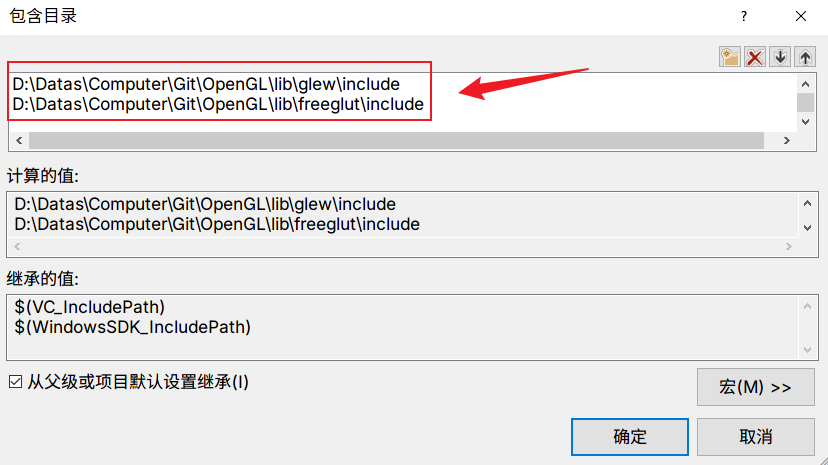
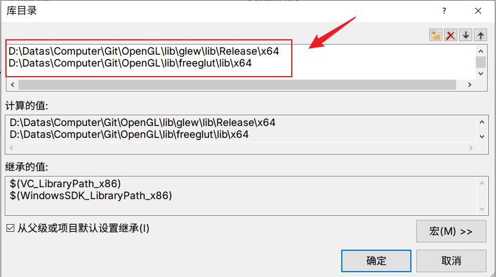
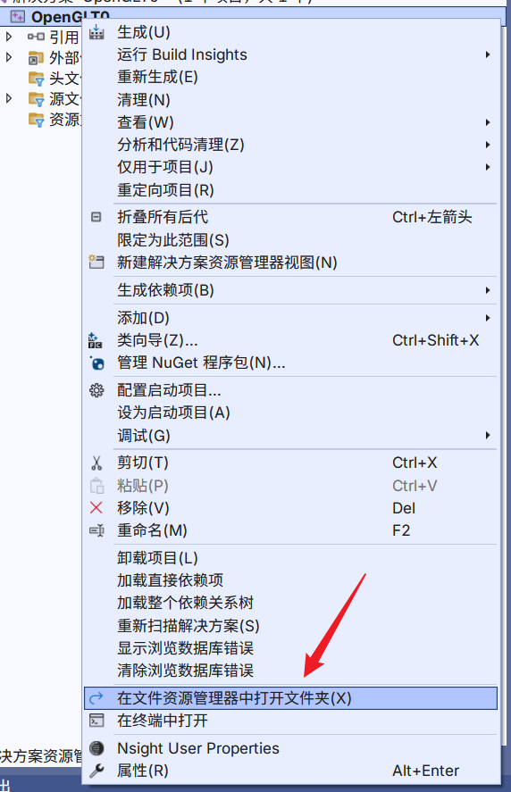
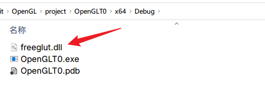

如何在visual studio中配置freeglut和glew
1 下载freeglut和glew库
- 从这个地址https://www.transmissionzero.co.uk/software/freeglut-devel/下载编译好的freeglut版本

- 从这个地址https://glew.sourceforge.net/下载编译好的glew版本

2 在Visual Studio工程中进行配置
先新建一个C++的控制台应用，然后进行下列的配置
2.1 配置include包含目录和lib目录
- 点开“项目”，右键点击“属性”

2.VC++->常规->包含目录，把下载的freeglut和glew库的include文件夹添加进去，（包括后面）建议“所有配置”和“所有平台”

3.VC++->常规→，库目录，把下载的freeglut和glew库的lib文件夹添加进去,我电脑是64位，我这边就添加了64位的目录进去

2.2 复制freeglut.dll程序集到生成目录里
- 在main函数文件里运行下段代码，会报错
#include <iostream>
#include <GL/freeglut.h>//freeGLUT窗口库
/**
* 渲染回调函数
*/
void RenderScenceCB() {
// 清空颜色缓存
glClear(GL_COLOR_BUFFER_BIT);
// 获取 OpenGL 版本信息
const char* version = (const char*)glGetString(GL_VERSION);
std::cout << "OpenGL Version: " << version << std::endl;
// 交换前后缓存
glutSwapBuffers();
}
/**
* 主函数
*/
int main(int argc, char** argv) {
// 初始化GLUT
glutInit(&argc, argv);
// 显示模式：双缓冲、RGBA
glutInitDisplayMode(GLUT_DOUBLE | GLUT_RGBA);
// 窗口设置
glutInitWindowSize(480, 320); // 窗口尺寸
glutInitWindowPosition(100, 100); // 窗口位置
glutCreateWindow("Tutorial 01"); // 窗口标题
// 开始渲染
glutDisplayFunc(RenderScenceCB);
// 缓存清空后的颜色值
glClearColor(0.0f, 1.0f, 0.0f, 0.0f);
// 通知开始GLUT的内部循环
glutMainLoop();
return 0;
}
2.点击“项目”，右键点击“在文件资源管理器中打开文件夹”

3.讲下载下来的freeglut.dll（在下载下来的bin目录里）复制到生成目录里，再运行就正常了，这样就可以进行正常的OpenGL API测试
